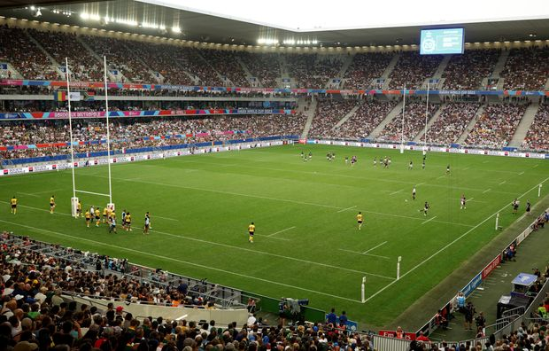
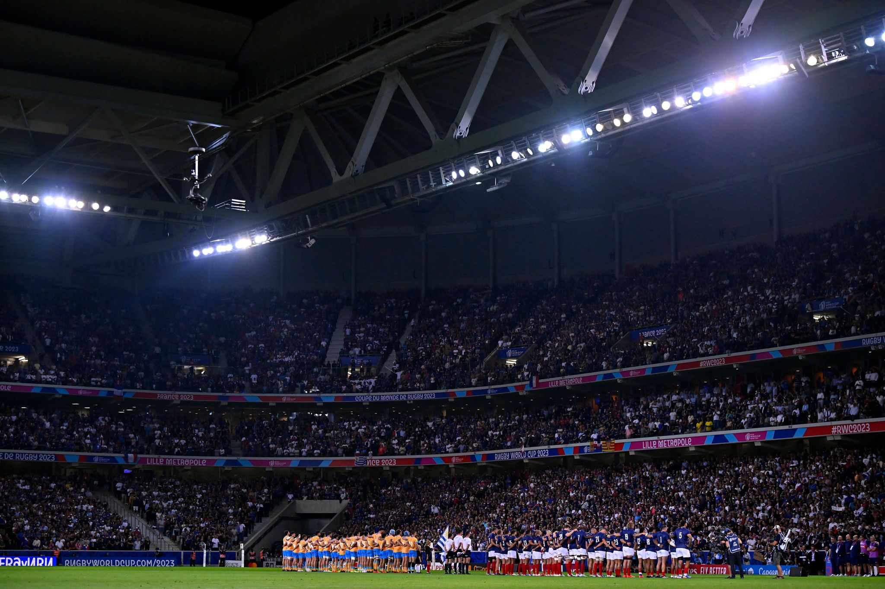
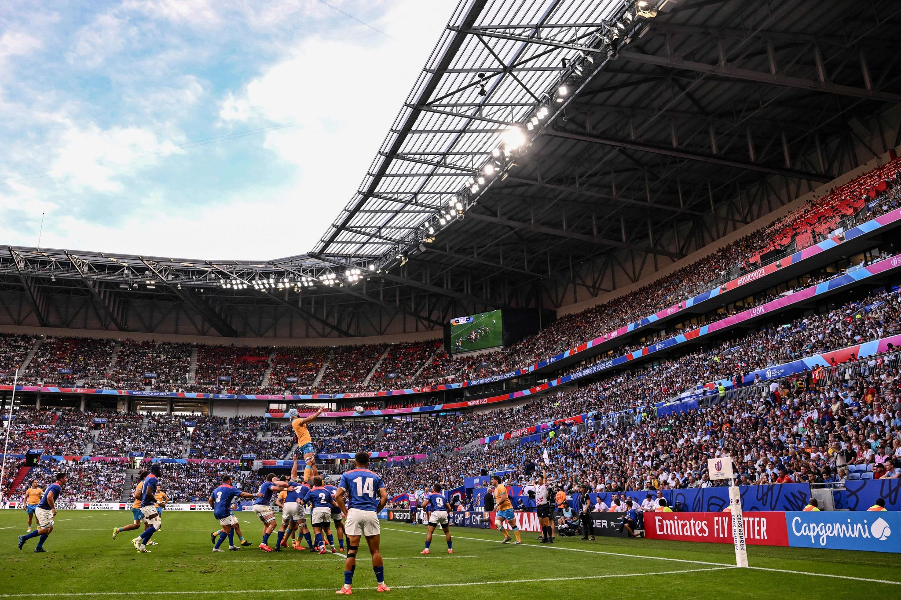
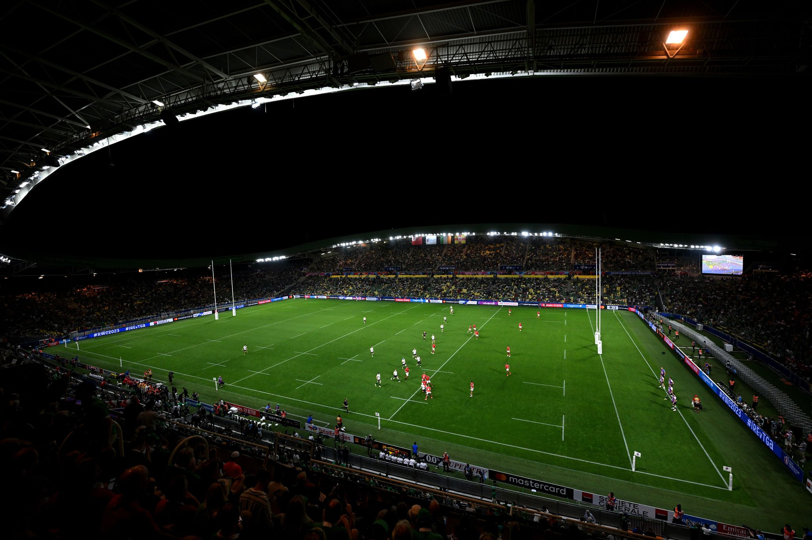
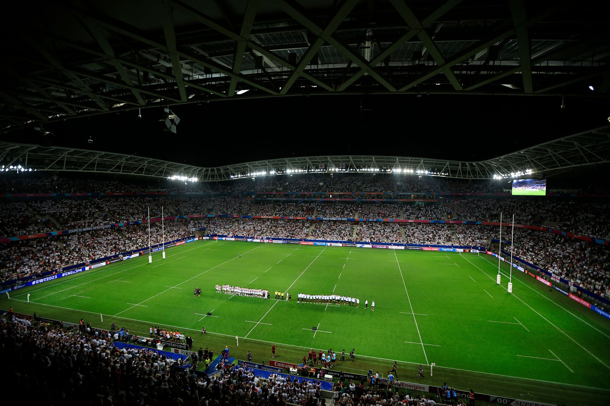
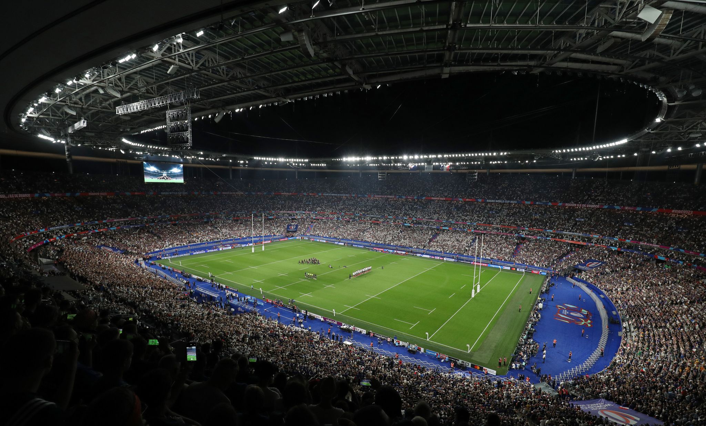
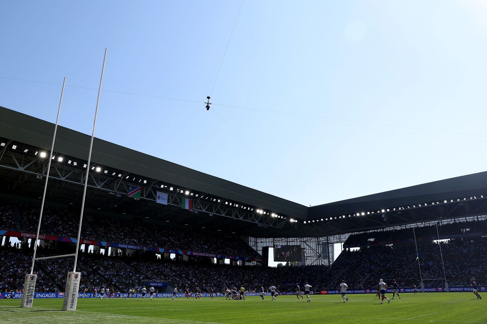
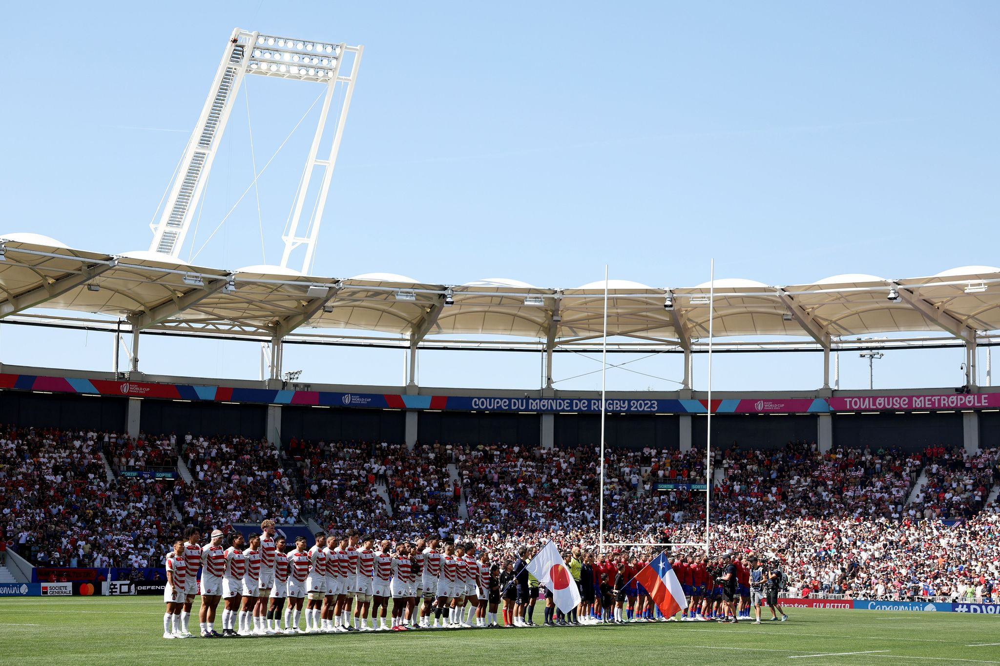

Stadiums
Home
Teams
Stadiums
Results

Stade de Bordeaux

Stade Pierre Mauroy

Ol Stadium
Stade de Marseille

Stade de la Beaujoire

Stade de Nice

Stade de France

Stade Geoffroy-Guichard

Stade de Toulouse
 Stade de Marseille
Stade de Marseille